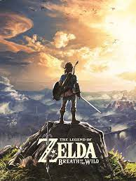
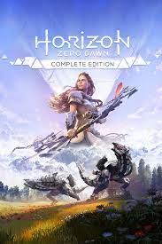
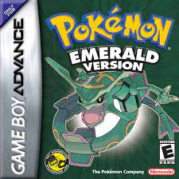

| Título |
Resumen |
Datos Técnicos |
Imagen |
| The Legend of Zelda: Breath of the Wild |
La historia de la familia real de Hyrule es también la historia del cataclismo. Y la historia del cataclismo siempre ha sido la de Ganon. Descubre el enigmático pasado de esta asolada tierra, un mundo entero repleto de aventuras que espera ser explorado, y viaja como Link por bastos campos, espesos bosques y cumbres nevadas bajo el cielo abierto de Hyrule para revelar cómo la oscuridad se impuso sobre la luz.
|
- Desarrollador: Nintendo EPD
- Género: Acción-Aventura
- Plataformas:Wii U, Nintendo Switch
- Lanzamiento: 3 de marzo de 2017
|
 |
| Horizon Zero Dawn |
Horizon Zero Dawn es un videojuego de rol con elementos de aventura en tercera persona. El juego se ambienta en un mundo post-apocalíptico compuesto por regiones rurales, zonas montañosas, bosques, desiertos y montañas nevadas. Cuenta con un ciclo diurno y nocturno, además de un sistema meteorológico dinámico. |
- Desarrollador: Guerrilla Games
- Género: Acción-Aventura
- Plataformas:Playstation 4, Playstation 5, Microsoft Windows
- Lanzamiento: 1 de marzo de 2017
|
 |
| Pokemon Esmeralda |
Te encuentras en la región de Hoenn, un pequeño archipiélago. Se caracteriza por la introducción de batallas dobles, concursos Pokémon, el complejo del Frente Batalla y dos nuevos equipos antagonistas, el Equipo Magma y el Equipo Aqua que desean capturar a Groudon y Kyogre respectivamente para cumplir sus planes. |
- Desarrollador: Game Freak
- Género: RPG
- Plataformas:Game Boy Advance
- Lanzamiento: 21 de octubre de 2005
|
 |
| God of War |
Tras haberse cobrado su venganza contra su padre Zeus y los demás Dioses Olímpicos, el antiguo dios de la guerra, Kratos, ahora vive con su joven hijo Atreus en el mundo de los Dioses Nórdicos, una tierra hostil habitada por feroces monstruos y guerreros. Kratos deberá actuar como mentor y protector de su hijo. |
- Desarrollador: SCE Santa Monica Studio
- Género: Acción-Aventura
- Plataformas:Playstation 4, Playstation 5, Microsoft Windows
- Lanzamiento: 20 de abril de 2018
|
 |